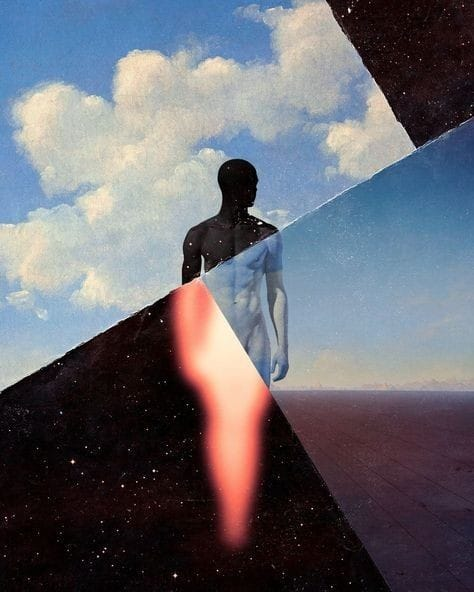
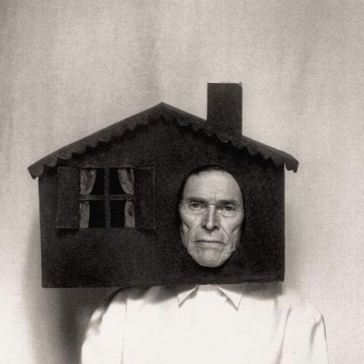

a little about life
last modified on mar 27, 2025
hello, my crystal-clear people! hope everyone is doing great.
so today, this fellow saint has come all the way down from the peak of a mountain named wisdom just to tell ye all, actually, share his opinion about life, what i think of it, what i don’t. and maybe a little bullshit from the right and some from the left. this blog might be named life or something, but it’s not just the living concept or something, it’s everything that makes up life.
now this blog might feel very random at times, so yep, just letting ye know!
umm… finding the right way to start it… actually, let it be open-started.
so, i think i understand life a little, not completely, only a little of it. but if someone asked me, “tell me what this life is about,” i might not be able to tell them. i wouldn’t be able to give a definition of it. and if i were asked whether i’m living my life on the same terms as i understand it, i’d still say no. and i guess it’s the same way with everyone, no one truly lives their life on the same terms they seem to understand it.
some beliefs i have: that each of us, at our core, is the same, you, me, everyone, hell, even einstein. we are nothing different. i can do all the same things that you can do and vice versa. the only difference is the way we do it. but where does this difference stem from? i believe it comes from the idea that everyone wants to be different. that is the root of this difference. and maybe that might be the unique thing… maybe. but really, there is nothing unique about it. like, if everyone has this unique thing, doesn’t it become a cliché?
people, at their core, are too attached to their beliefs. they don’t want to abandon their belief just for some logic that could take away the comfort that particular belief brings to them. and also, that “people who believe without reason can’t be convinced by giving a reason.”
now talking about love, some people preach about it as life is not complete without it. but let me tell you what i think. i dont know if i've ever truly been in love or not. i was definetly attracted to a girl i used to talk to-i still like her-but i'm not sure what qualifies something as "love." so honestly, i dont really know what love actually is. for me, maybe its just deep affection and care towards to someone. when one is in love-if i ever was or still am-one try to stand out, try to be different from the crowd, just for that person to notice, to become someone that person like.
i don't know
speaking from the other side, a person who isn't in love usually craves it. i guess everyone wants to be loved-who doesn't? or maybe it's not love itself, but just the assurance that someone is around and cares.
as for me, i've kind of grown out of that desire-not completely, but to an extent. what i think is, it doesn't really matter. it's like this: if you never know what love was, you wouldn't long for it. you wouldn't care, or think, or talk about people you've never even met.
i feel (just my opinion) that an experienced life is better than just a good life, an experienced life can be a good life, but a good life doesn’t necessarily mean an experienced one. i’m not saying you should experience everything, but you should experience life as much as you can. its just my opinion.
see, anyway, i am an absurd guy (oh, the irony), so the meaning of things doesn’t really matter to me. because at the end of life, if i’m not there, then what do meanings matter to me? i’m just a guy looking for peace, looking for chances to be amused by this absurdity of life. and i won’t lie, i’m having quite some time. but in between, i do become an existentialist who kinda gives a shit to some point. but beyond that, who are you, and who am i? it doesn’t really matter.
yep, that was all in this empty head. will see you invisible folks later. till then, peace.